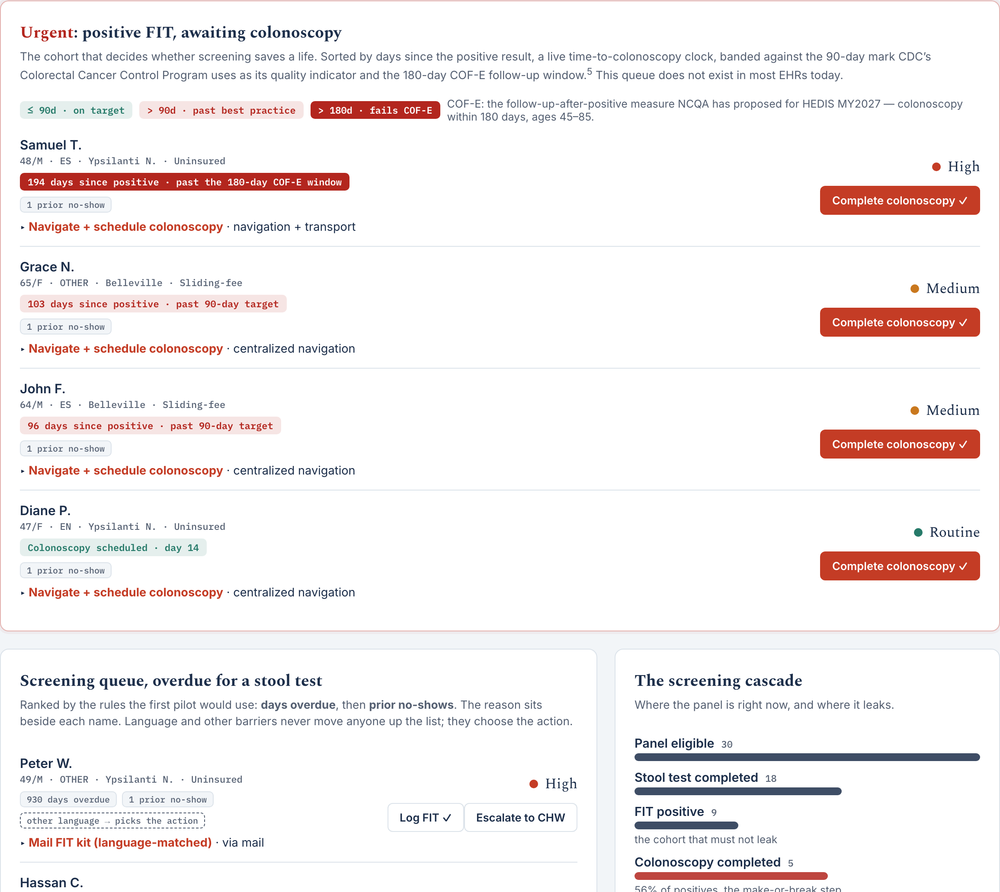

From a recommended test to a finished one.
Health centers already know what gets people screened for colorectal cancer. What fails is follow-through: kits that never come back, and positive results that never reach a colonoscopy. The Prevention Adoption Initiative proposes a weekly routine, run by a clinic’s own staff, that closes those gaps.
Your staff make the calls, mail the kits and navigate patients.HSREP works beside them: finds out why patients stall, writes the scripts, trains the team, keeps the list.An independent evaluator judges whether it worked.
Led by Md Shafaat Ali Choyon, MPH, CHES®. Sixteen years getting people to follow through, including screening services in Bangladesh. Why me
No HSREP fee for the first three months. Kits, postage, texts and your staff’s time stay with you, as they do now.
- 1Due for screeningAge 45 to 75, not up to date
- 2Stool-test kit mailed homeWith a reminder in their language
- First gap: many kits never come back
- 3Test returned and read
A pilot proposed from a published, measured argument.
This page is the third step of a thread that began with an article. Each step is public and dated.
- Argued
When we ignore public health prevention, we pay the price
The Eastern Echo · 14 Nov 2025
- Measured
Season 1: nine pieces, two countries
57,274 impressions, $0 paid · 21 Feb – 12 Apr 2026
- Proposed this page
Prevention Adoption Initiative
Published July 2026 with a working worklist demo · in development, nothing deployed
- Put to peers
Roundtable № 02: where does preventive care break down?
Open since 9 Sep 2026 · moderated, on the record
- Next
Colorectal Cancer Screening Completion Pilot
One host clinic sought · 12 months · no HSREP fee for the first 3 months
- Then
The same routine, five other completion gaps
Roadmap, not scheduled · blood pressure, diabetic eye exam, kidney test, two follow-ups
Start with your part
The pilot needs three partners. Pick one to see what it would mean for you.
Time from your existing outreach staff, sized with you at the start. No new hires.
A quality-improvement lead who meets with me weekly.
A decision at month three: fund the remaining nine months, or stop.
One nightly coded file: 19 columns, dates as day counts. The key stays with you.
Outreach costs: kits, postage and texts.
About 30 hours a week of hands-on work with your staff: scripts that people act on, training, and a next step for every patient who stalls. No fee for the first three months.
A weekly list of who is overdue, and why.
An independent evaluation of a measure you already report.
- Before month 1 · setupWhat you set up
- A 30-minute conversation, then an agreement.
- Name a quality-improvement lead and the outreach staff who will work with me.
- Your IT lead maps the 19 columns once.
- The evaluator measures the starting point and publishes the plan.
- Months 1–3 · no feeWhat your staff do
- Make the calls, mail the kits and navigate patients, as now, with me beside them.
- Your QI lead gives me 30 minutes a week.
- You cover kits, postage and texts.
- Month 3 · decisionWhat you decide
- We review the feasibility measures together.
- Fund months 4 to 12, find a funder with me, or stop. Nothing continues by default.
- Months 4–12 · if fundedWhat you get
- A month 6 readout and a month 12 evaluation, published whichever way they go.
- A second person on your team trained to keep the list.
- By month twelve your staff run the routine without me. If it did not work, you go back to how you worked before.
Own the evaluation independently, with IRB approval.
Set the protocol. Working assumption: before and after against the site’s own trend, with a comparison clinic where possible, reported with RE-AIM.
Publish the plan before the pilot starts.
A real-world completion pilot in a federally qualified health center, and the implementation-science question of how well each step is carried out.
Co-authorship.
Still open: the comparison clinic and the target.
- Before month 1 · setupWhat you set
- A 30-minute conversation on the design.
- The protocol: before and after against the site’s own trend, a comparison clinic where possible, reported with RE-AIM.
- IRB approval and the data use agreement for the coded file.
- The target, set in advance, and the plan published before the pilot starts.
- Months 1–3 · feasibilityWhat you watch
- The feasibility measures: kits sent and returned, positives navigated and booked, days from a positive test to a booking, staff hours, file completeness.
- No outcome claims yet. Three months cannot show that rates rose.
- Month 3 · decisionWhat you judge
- Your independent read of the feasibility measures goes into the site’s decision to continue or stop.
- Months 4–12 · if fundedWhat you report
- Month 6: first readout. Month 12: final evaluation against the published target.
- Results published whichever way they go, with co-authorship.
- Still open with you: the comparison clinic and the target.
Funding for months 4 to 12, if the three-month feasibility phase shows the routine can run.
Support for the evaluation, outreach materials or a second site.
Criteria for further investment, agreed before results.
A published benchmark to compare against: mailed-kit outreach at $54.83 direct per patient screened, $72.90 with overhead (Pignone et al., JGIM 2021). Not the pilot’s cost.
Results published whichever way they go.
- Before month 1 · setupWhat you agree
- A 30-minute conversation.
- The criteria for further investment, agreed before any results exist.
- Nothing to fund yet.
- Months 1–3 · no feeWhat you watch
- The feasibility phase runs at no cost to you.
- You see the published plan and the feasibility measures as they come in.
- Month 3 · decisionWhat you decide
- If the routine can run, you fund months 4 to 12, or support the evaluation, outreach materials or a second site.
- If it cannot, nothing continues.
- Months 4–12 · if fundedWhat you get
- A month 6 readout and a month 12 evaluation, published whichever way they go.
- A published benchmark to compare against: mailed-kit outreach at $54.83 direct per patient screened, $72.90 with overhead (Pignone 2021). Not the pilot’s cost.
- A routine the site’s own staff run after month twelve.
Two problems, measured on two different groups.
Only about 8% of U.S. adults 35 and older receive all fifteen high-priority preventive services (Borsky et al., Health Affairs, 2018). Colorectal cancer screening is the part this pilot takes on. Screening completion counts everyone who is due. Follow-up counts only people whose test came back positive. They are not steps of one funnel, so this page never multiplies them.
Age ranges differ: health-center data (HRSA UDS) has covered ages 45–75 since 2023. Close measures, not identical ones.
Shown as a range because studies disagree. NCQA has proposed a measure for it: colonoscopy within 180 days of a positive test (COF-E, HEDIS MY2027).
In the largest real-world health-center trial (STOP CRC, 26 clinics), the same mailed-kit program moved completion anywhere from −7 to +18 points, +3.4 on average. The main difference was how well each clinic carried it out.
Sources: Borsky et al., Health Affairs 2018; Healthy People 2030 C-07; HRSA UDS CY2025 national and Michigan indicators, accessed 3 August 2026; Coronado et al., JAMA Internal Medicine 2018. More in Evidence and questions.
One routine, every week.
Every method in it is already recommended by the Community Preventive Services Task Force. The routine makes sure each step happens for every patient who is due.
Everyone overdue for a stool test, and every positive test still waiting for a colonoscopy, pulled from the nightly file.
WhoHSREP (me), from your nightly file.
This week: 12 overdue for a stool test, 4 positive tests without a finished colonoscopy. Synthetic panel of 30.
Three transparent rules, shown beside every name: days overdue, days since a positive test, prior no-shows. No predictive model in the first pilot.
WhoThe rules, in the worklist. Anyone on staff can see why a case is where it is.
Samuel T. · 194 days since a positive test · 1 prior no-show → first in the follow-up queue.
Match the action to the barrier: a mailed kit, a reminder in the patient’s language, help booking, or a community health worker.
WhoYour outreach staff, with scripts I write and test with them.
Samuel T. · transport barrier → navigation, plus a ride to the colonoscopy.
Record the completed test or colonoscopy and the days it took, then check whether follow-up differs between language groups.
WhoYour staff record it. I review the week with your quality-improvement lead.
Follow-up by language: English 3 of 4 · Spanish 1 of 3 · Other 1 of 2.
At-home test kits by mail, simple scheduling, and help with whatever is in the way.
From one nightly coded file, I build the weekly list your staff work from. Deeper EHR integration can come later.
So the site’s own staff can run the routine, and keep running it after the pilot.

See the worklistThe weekly list I would build from your nightly file and go through with your outreach staff. It supports the routine; the calls and kits are done by people. Thirty invented patients: pick a case, record it as done, and watch the numbers move. No real data, and nothing is sent.
Open the worklist →Future capabilities, including any predictive model, come only after a validated pilot. They are set out on the future roadmap.
Twelve months at one Southeast Michigan health center.
The pilot would suit a health center whose colorectal screening rate is below the national health-center benchmark, with a modern EHR, staff who already do patient outreach, and someone who leads quality improvement. I would reach that clinic through the Michigan Primary Care Association and EMU faculty.
Three months shows whether the routine can run: kits sent and returned, positive tests navigated and booked, days from a positive test to a booked colonoscopy, staff hours used, and whether the nightly file arrives complete. It cannot show that screening rates rose; that is what months 4 to 12 are for. Milestone timing is proposed and depends on the protocol agreed with the academic partner.
About 30 hours a week all year. What fills them changes.
I start by doing the work beside your staff, move to teaching it, and end by stepping back. Proposed; the detail is set with your team at the start.
- Before month 1 · setupLearning your clinic
- Sit with the outreach staff and the quality-improvement lead to map how a kit goes out and comes back today.
- Agree the 19 columns of the nightly file with your IT lead.
- Draft the first scripts and letters.
- The evaluator publishes the plan.
- Months 1–3 · feasibility, no feeDoing
- Load the file and refresh the list each Monday.
- Sit in on calls with your outreach staff, and work out why each person has not finished.
- Write and test scripts; change the ones that do not land.
- Report to your QI lead weekly. Month 3: we review the feasibility measures and decide together.
Most hours with staffA few on the file - Months 4–9 · funded pilotTeaching
- Your staff run the weekly huddle; I coach rather than lead it.
- Train a second person to load the file and keep the list.
- Finish scripts in your patients’ languages, with the staff who use them.
- Month 6: first readout with the evaluator, and we fix what it shows.
Hard cases and trainingRoutine now with staff - Months 10–12 · handoverStepping back
- Your staff load the file, run the list and the huddle. I watch and fix.
- The routine is written down and handed over.
- Month 12: final evaluation, published whichever way it goes.
- By month twelve your staff run it without me.
Watching and fixingStaff run it
Nightly file in. Refresh the list. Who is new, who is still waiting.
Thirty minutes with your QI lead. Then calls beside the outreach staff.
Calls again. Note why people stall. Rewrite the script that did not work.
Test the new script. Chase the positive tests that still have no booking.
Count what moved and what did not. Short note to the QI lead.
Delivers care
Existing outreach staff make the calls, mail the kits and navigate patients. A quality-improvement lead meets weekly. The site covers kits, postage and texts.
Designs and runs the routine with them
About 30 hours a week. Works the list with staff, matches each follow-up to the reason it stalled, writes and tests the scripts, trains, and fixes what is not working. The data and dashboard are the smallest part. No fee for the first three months; months 4 to 12 are funded by the site or a funder.
Judges whether it worked
Before and after against the site’s own trend, with a comparison clinic where possible, using RE-AIM. The plan is published first, and the results whichever way they go.
What a host site signs up for
- Cost to your site
- No fee for the first three months, the feasibility phase. If the pilot continues, months 4 to 12 are funded by your organization or by a funder we find together. That is decided at month three, not before.
- My time
- About 30 hours a week, on site or remote, whichever suits your team: three months at no fee, then through month twelve if the pilot is funded.
- What I do each week
- Most of the week is spent with your team. With your outreach staff I go through the priority list and work out, from what they hear on the calls, why each person has not finished: cost, fear of the procedure, the bowel prep, transport, time off work, or a reminder that never made sense to them. Then we pick the next step that fits that reason. I write and test the reminder scripts and letters in plain language (and in patients’ own languages where needed), train staff to use them, and change the routine with your quality-improvement lead when a step is not working. Loading the nightly file and keeping the list and dashboard current takes a few hours a week.
- What your staff do
- Make the calls, mail the kits and navigate patients, in your own systems, with staff time we size together at baseline. No new hires.
- At month three
- We review the feasibility measures together. You fund the rest of the pilot, we look for a funder, or we stop. Nothing continues by default.
- What stays with you
- Patient contact, clinical decisions, the key that links codes to patients, and the outreach budget for kits, postage and texts.
- If it does not work
- The site goes back to how it worked before, and the plan and the negative result are published.
The data spec is the whole ask of your IT team: 19 coded columns in one nightly file, with dates sent as day counts. No name, MRN, full date of birth, address or phone leaves your system, and the key stays with you. Field-by-field notes are in the worklist demo.
The work already done.
Judge the initiative by what exists before the ask.
Screening growth, operationally
At Praava Health in Bangladesh, as Head of Marketing & Corporate Sales, I redesigned the diagnostic packages and laboratory screening utilization rose 34% from 2021 to 2022. That was volume, not completion, and it was moved inside a real delivery system.
A published record
An MPH capstone (Eastern Michigan University) examining health-system fragility and prevention across the U.S. and Bangladesh, published publicly as Season 1’s nine-article argument.
Attention on a $0 budget
Season 1’s advocacy campaign drew 57,274 impressions, summed across three platforms and reconciled to better than 94%, with no ad spend, 5.7× the target set in advance.
The routine, before the ask
The weekly routine, its pillars, the evaluation approach, the worklist demo and the U.S. brief are designed and public. Nothing is deployed.
The hard part of this pilot is getting people to finish the test.
The work in this pilot draws on three kinds of skill that clinics usually get from different people: someone who can explain a test so people act on it, someone who knows why people drop out of a service halfway, and someone who can make a weekly routine stick in a busy clinic. I have worked in all three.
Messages people act on
MPH in Health Education & Promotion (Eastern Michigan University) and CHES®. Reminders, letters and call scripts written at the right reading level, and staff trained to use them.
Sixteen years getting people to follow through
Marketing and growth work, most recently running screening services at Praava Health in Bangladesh. Many of the reasons people dropped out there (a price surprise at the next step, urgency that never landed, a second visit that was hard to make) show up in colorectal follow-up too.
A routine that keeps running
MBA in operations management, and chief operating officer at LasterTreat, where I ran the company’s ERP, BI and CRM systems. The worklist demo on this site is HSREP’s own build.
Md Shafaat Ali Choyon, Founder, HSREP · MBA, MCIM, MPH, CHES®. Your staff know your patients and your community. I know why people stop halfway through a service and what gets them to finish, from sixteen years of doing exactly that. Put together, that is how the routine gets built, and an independent evaluator judges the result.
Sources, limits and plain answers.
Sources and methods
The Community Preventive Services Task Force recommends each method, with these median effects on colorectal cancer screening:
| Method | Median increase, percentage points | Pillar |
|---|---|---|
| Reducing structural barriers (mailed at-home kit) | +16.1 | Make finishing easy |
| Provider reminder and recall | +15.3 | Know who is overdue |
| Patient navigation | +13.6 | Train the site’s staff |
| Patient reminders | +11.5 standalone, +10.9 incremental | Know who is overdue |
These are published effects in other settings, not the pilot’s expected results, and they are not added together. STOP CRC (Coronado et al., JAMA Internal Medicine 2018) is the cluster-randomized trial in 26 health centers behind the −7 to +18 point range.
Sources: CDC Community Preventive Services Task Force, colorectal cancer screening findings, accessed 3 August 2026; Borsky et al., Health Affairs 2018; Healthy People 2030 objective C-07 (2023 baseline 63.5%, target 72.8%); HRSA Uniform Data System CY2025 national and Michigan performance indicators, accessed 3 August 2026. UDS changed its screening age range from 50–75 to 45–75 beginning CY2023, so years before and after that change are not directly comparable.
How patient data would be handled
The host site remains the covered entity and keeps the key that links codes to patients. HSREP receives only the coded nightly file, under a data use agreement set up through the academic partner’s IRB. Phase 1 is designed so that no business associate agreement is needed, because HSREP never handles names, record numbers or full dates. A BAA would come in only if a later phase hosts patient data.
Consent and outreach run under the site’s own policies. Operational materials will be reviewed by counsel before any launch.
What is the Prevention Adoption Gap?
Why track follow-up colonoscopy, not just the screening test?
Is the colorectal-cancer screening pilot running yet?
Where would the first pilot run?
Is the initiative specific to colorectal cancer?
How can an organization host or partner on the pilot?
Does the first pilot use AI?
How is this different from CDC's Colorectal Cancer Control Program?
What is the Prevention Adoption Initiative?
If your organization owns preventive-care completion, let’s talk.
Host the pilot, fund it, or partner on it. Step one is a 30-minute conversation.
Where does preventive care break down between recommended and completed in your setting?
The Prevention Adoption Gap is the argument on this page. The open question is the same argument put back to the people who watch it happen: colorectal screening reaches 44.89% at the average federally qualified health centre and 48.74% in Michigan, and the reasons are not in the published figures.
Answer from your own setting. Five minutes, under your name and affiliation, read before anything is published, and nothing published without your consent.